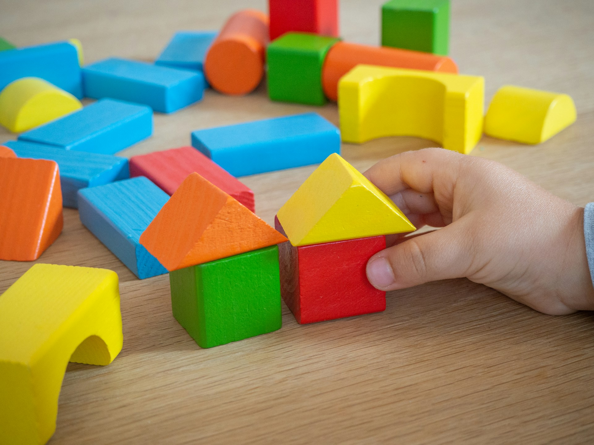

치료/교육 프로그램

아이의 언어, 인지, 정서, 행동 특성을 통합적으로 살펴보고 필요한 프로그램을 제안합니다. 치료는 아이의 현재 수준과 목표에 맞춰 단계적으로 진행하며, 보호자와 함께 변화 과정을 공유합니다.
언어치료
전반적인 의사소통 능력을 향상시키기 위한 전문 치료입니다. 언어 이해와 표현, 발음, 대화 기술, 사회적 의사소통까지 함께 살펴봅니다.
이런 경우 필요합니다
- 또래보다 말이 늦은 경우
- 단어 수가 적고 문장 표현이 어려운 경우
- 질문을 이해하거나 지시에 따르기 어려운 경우
- 발음이 부정확하여 의사전달이 어려운 경우
- 대화 차례 지키기, 주제 유지가 어려운 경우
- 읽기, 쓰기 이전의 언어 기초 능력이 부족한 경우
인지학습치료
학습의 기초가 되는 인지기능을 강화하여 학습 준비도와 학교 적응을 돕습니다. 주의집중, 기억력, 시지각, 사고력, 문제해결력, 읽기와 쓰기 능력을 체계적으로 훈련합니다.
이런 경우 필요합니다
- 집중이 잘 되지 않고 산만한 경우
- 읽기, 쓰기, 수 개념 이해가 어려운 경우
- 문제를 순서대로 해결하는 데 어려움이 있는 경우
- 학습 속도가 느리거나 기초학습이 부족한 경우
- 느린학습자, 학습부진으로 고민하는 경우
- 지시 따르기, 기억력, 사고력이 부족한 경우
놀이치료
아이에게 가장 자연스러운 표현 방식인 놀이를 통해 정서, 행동, 관계의 어려움을 이해하고 돕는 치료입니다. 아이가 안전한 관계 안에서 감정을 표현하고 조절하는 경험을 쌓도록 돕습니다.
이런 경우 필요합니다
- 낯가림이 심하고 위축된 경우
- 불안, 분리불안, 두려움이 큰 경우
- 짜증, 공격성, 고집 등 행동 조절이 어려운 경우
- 또래 관계가 어렵거나 사회성이 부족한 경우
- 감정 표현이 서툴거나 스트레스 반응이 큰 경우
- 새로운 환경 적응이 어려운 경우
검사 및 상담 프로그램
심리검사
심리검사는 아이의 정서, 행동, 인지, 성격 등을 객관적으로 파악하여 현재 상태를 정확하게 이해하는 과정입니다. 검사 결과는 치료 방향과 양육 방향을 세우는 데 중요한 자료가 됩니다.
- 신경심리검사: BGT, VMI, CCTT, STROOP, CAT
- 지능검사: K-WISC-V / 만 6세부터 만 16세 11개월
- 투사검사: HTP, KFD, KSD, DAS, Rorschach
- 행동평가: KPRC, 부모 및 교사 평정
- 자기보고식 검사: SCT, MMPI-A
- 부모 검사: MMPI-2, SCT, PAT
부모·청소년 상담
상담은 아이와 청소년의 현재 상태를 이해하고 필요한 도움을 함께 찾는 과정입니다. 검사 결과 해석, 양육 방향, 학교생활과 또래 관계, 학업 스트레스와 정서 어려움 등을 다룹니다.
- 아이의 발달 및 현재 상태 파악
- 보호자 양육 및 환경 상담
- 필요한 검사 및 치료 방향 안내
- 감정 기복, 불안, 우울, 무기력에 대한 상담
- 친구 관계, 학교생활, 진로 및 학업 스트레스 상담